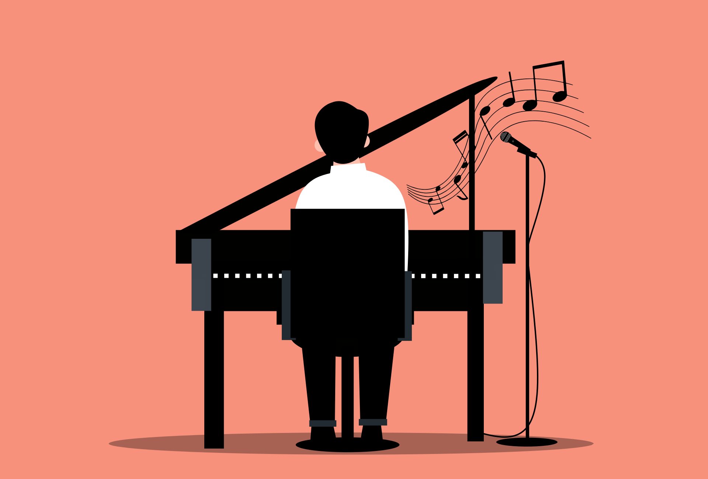

Solfexo musical
Para aprender o piano, é totalmente necesario de que aprendas a ler a linguaxe musical. Recomendo que fagades a cada práctica de piano 10 minutos de leitura musical.
Un instrumento que enbellece a vida de quen o escuta.
Moitas persoas ten o consenso de que o piano é un instrumento dificil e para xente culta. Pero, con disciplina e paciencia todos son capaces de dominalo.
Dareivos alguns motivos para non desistir dese marabilloso instrumento

Recomdareivos as obras más bonitas e famosas fáciles para os que son iniciantes no instrumento.
Para os de nivel intermediario e avanzado, recomendareivos obras que son as mellores que eu xa aprendín
Para aprender o piano, é totalmente necesario de que aprendas a ler a linguaxe musical. Recomendo que fagades a cada práctica de piano 10 minutos de leitura musical.
Así como nos deportes, é totalmente necesario alongar os dedos antes do estudo para que non haxa dores durante a práctica e tamén para relaxalos e non telos tenso tocando.
É normal durante o estudo en que empezamos a repetir fragemntos sen pensar no que fazemos. É recomendado que a cada fragmento que toques, pensar no que fixeches mal ou que se podería mellorar. Se adoptas esa práctica, verás que o teu tempo de estudo para unha peza cae para a metade.